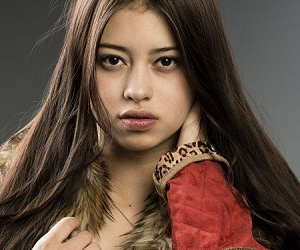
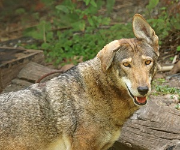
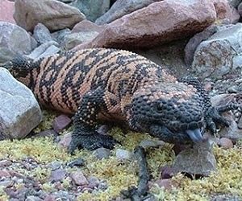

Darcy Knutson
- Name: Darcy Knutson
- Deedname/Shadowname: N/A
- Apparent Age: 30s
- Breed: Homid
- Tribe/Tradition: Skin-Dancers
- Auspice/Faction: Ragabash
- Visible Merits/Flaws: N/A
- General Disposition and/or Description: A fresh cub. All his life, Darcy has been told he was weak, useless, and an affront to Gaia's Will. He thought after his first change, that would also change... and it did, but he's not quite sure what he thinks about how it turned out.
Winona Coe

- Name: Winona Coe
- Deedname/Shadowname: Unpo Wichachpi Win (Daybreak Star Woman)
- Apparent Age: Late 20s
- Breed: Homid
- Tribe/Tradition: Nuwisha
- Auspice/Faction: N/A
- Visible Merits/Flaws: N/A
- General Disposition and/or Description: From the Great Plains, Winona is the current guardian of the Dutchman and has been so for decades. She does not question Coyote’s wisdom about allowing the Garou’s lost, forgotten and exiled into the place of power, but she has no patience for those who may show themselves as a bully either within or without the Garou Nation. They are all arguing children, and she sees herself as Grandmother, even if they do not see her the same way.
Crook-Ear

- Name: N/A
- Deedname/Shadowname: Crook-Ear
- Apparent Age: Late Teens / Early 20s
- Breed: Lupus
- Tribe/Tradition: Ronin (former Cyber-Dog)
- Auspice/Faction: Theurge
- Visible Merits/Flaws: N/A
- General Disposition and/or Description:She doesn’t know why people look at her so sadly, why didn’t her pack come and take her? She did nothing wrong. Her teeth and claws shine like the moon, that can’t be all bad. They did this to her after all, but she forgives them- she has a new pack now.
Adam Linton
- Name: Addison Linton the Third
- Deedname/Shadowname: N/A
- Apparent Age: Early 30s
- Breed: Homid
- Tribe/Tradition: Skin-Dancers
- Auspice/Faction: Galliard
- Visible Merits/Flaws: Huge Size (Tall)
- General Disposition and/or Description: Adam is an obviously anxious but affable man with an English accent and a lot of metaphorical ghosts that haunt him. He’s a frightened survivor and a healer with a desire to do good, but also stay alive, which can’t be said of most kin of his House.
Verna Delaney
- Name: Laverna Delaney
- Deedname/Shadowname: The-Unrelenting-Storm
- Apparent Age: Late 20s
- Breed: Homid
- Tribe/Tradition: Mountain Guardians
- Auspice/Faction: Kojubat
- Visible Merits/Flaws: [Rank 3][App: 3][SH:3 Helios] Bite shaped scar on left shoulder, large claw wound scar on stomach, and a small scar tracing from her upper lip to below her left eye
- General Disposition and/or Description: A young woman wearing comfortable and practical clothes for hiking and/or working outside. She keeps her hair mid-length to long, but nearly always pulled back into a messy ponytail or messy bun. She takes very good care of herself and is typically well groomed and wearing complimentary make-up (she only avoids make up if things have gotten “serious”).
Father Mugusu

- Name: Father Mugusu
- Deedname/Shadowname: Memories-of-Painted-Rock
- Apparent Age: Late 70s
- Breed: Suchid
- Tribe/Tradition: Mokole-mbembe
- Auspice/Faction: Unity-Crowned
- Visible Merits/Flaws: Aged
- General Disposition and/or Description: Silent and deadly, he lurks below the Dutchman and watches the goings-on, rarely coming to the surface. Even more rarely does he take homid form, only doing so when needing to communicate directly. Typically however, he simply watches and waits.